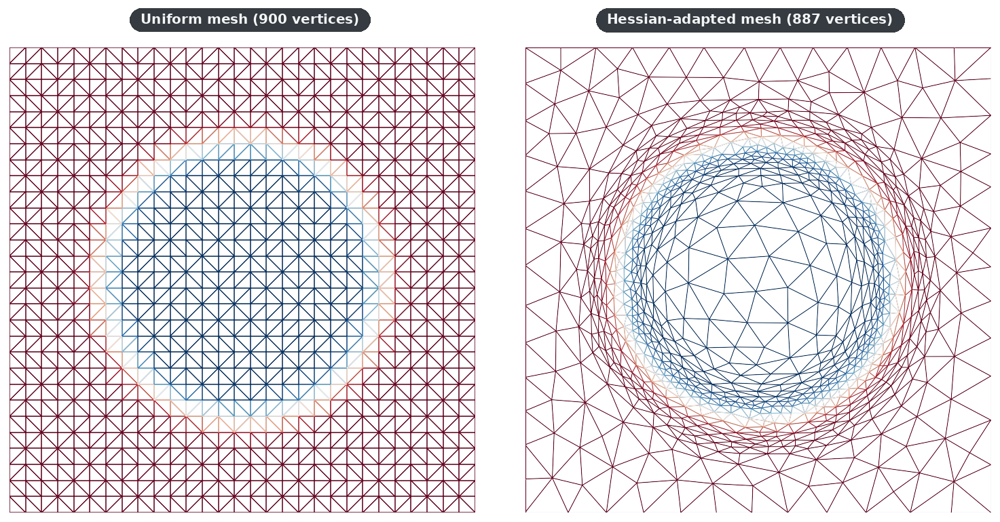
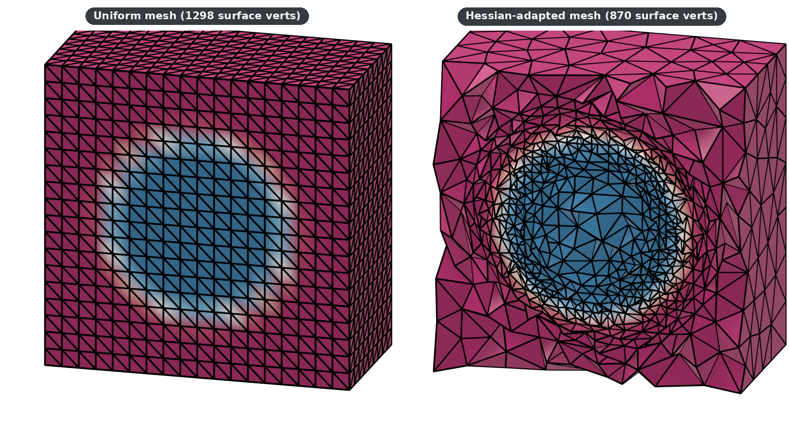

Metrics¶
This page documents the metric tensor operations in the mmgpy.metrics module.
Overview¶
Metric tensors control anisotropic mesh adaptation. A metric at each vertex specifies:
- Isotropic, target edge length (single scalar or
(n,1)array). - Anisotropic, target lengths along principal directions (a symmetric tensor in Voigt form).
The metric is attached to the dataset as point_data["metric"]; dataset.mmg.remesh(...) automatically picks it up.
Metric Creation¶
create_isotropic_metric(
h: float | NDArray[float64], n_vertices: int | None = None, dim: int = 3
) -> NDArray[np.float64]
Create an isotropic metric field from scalar sizing values.
Parameters¶
h : float or array_like Desired element size(s). If scalar, same size at all vertices. If array, must have shape (n_vertices,) or (n_vertices, 1). n_vertices : int, optional Number of vertices. Required if h is a scalar. dim : int, optional Mesh dimension (2 or 3). Default is 3.
Returns¶
NDArray[np.float64] Metric tensor array with shape (n_vertices, n_components) where n_components is 6 for 3D and 3 for 2D.
Raises¶
ValueError
If dim is not 2 or 3, n_vertices is missing when h is
a scalar, or h does not flatten to a 1D array.
Examples¶
metric = create_isotropic_metric(0.1, n_vertices=100, dim=3) metric.shape (100, 6)
sizes = np.linspace(0.1, 0.5, 100) metric = create_isotropic_metric(sizes, dim=3) metric.shape (100, 6)
options: show_root_heading: true
create_anisotropic_metric(
sizes: NDArray[float64], directions: NDArray[float64] | None = None
) -> NDArray[np.float64]
Create an anisotropic metric tensor from principal sizes and directions.
The metric tensor M is constructed as: M = R @ D @ R.T where D is diagonal with D[i,i] = 1/sizes[i]^2 and R contains the principal direction vectors as columns.
Parameters¶
sizes : array_like Principal element sizes. Shape (3,) for 3D, (2,) for 2D. Can also be (n_vertices, 3) or (n_vertices, 2) for per-vertex sizes. directions : array_like, optional Principal direction vectors. Shape (3, 3) or (2, 2) for single metric, or (n_vertices, 3, 3) or (n_vertices, 2, 2) for per-vertex directions. Columns are eigenvectors. If None, uses identity (coordinate-aligned).
Returns¶
NDArray[np.float64] Metric tensor(s). Shape (6,) for single 3D metric, (3,) for single 2D, or (n_vertices, 6) / (n_vertices, 3) for per-vertex metrics.
Raises¶
ValueError
If sizes is not 1D / 2D, the dimension is not 2 or 3, or
directions does not match the expected shape.
Examples¶
Create a metric with 10x stretch in x-direction:
sizes = np.array([0.1, 1.0, 1.0]) # Small in x, large in y,z metric = create_anisotropic_metric(sizes) metric array([100., 0., 0., 1., 0., 1.])
Create a rotated metric:
import numpy as np theta = np.pi / 4 # 45 degrees R = np.array([[np.cos(theta), -np.sin(theta), 0], ... [np.sin(theta), np.cos(theta), 0], ... [0, 0, 1]]) sizes = np.array([0.1, 1.0, 1.0]) metric = create_anisotropic_metric(sizes, R)
options: show_root_heading: true
create_metric_from_hessian(
hessian: NDArray[float64],
target_error: float = 0.001,
hmin: float | None = None,
hmax: float | None = None,
) -> NDArray[np.float64]
Create metric tensor from Hessian matrix for interpolation error control.
Given a Hessian H of a solution field, constructs a metric M such that the interpolation error is bounded by target_error. This is used for solution-adaptive mesh refinement.
The metric eigenvalues are: lambda_i = c * |hessian_eigenvalue_i| / target_error where c is a constant depending on the interpolation order.
Parameters¶
hessian : array_like Hessian tensor(s). Shape (6,) or (n, 6) for 3D, (3,) or (n, 3) for 2D. Components: [H11, H12, H13, H22, H23, H33] for 3D. target_error : float, optional Target interpolation error. Default is 1e-3. hmin : float, optional Minimum element size. Limits maximum metric eigenvalues. hmax : float, optional Maximum element size. Limits minimum metric eigenvalues.
Returns¶
NDArray[np.float64] Metric tensor(s) for adaptive remeshing.
Notes¶
For P1 interpolation, the interpolation error is bounded by: e <= (1/8) * h^2 * |d²u/ds²|_max
This function computes the metric that achieves a specified error bound.
options: show_root_heading: true
Hessian Recovery¶
compute_hessian(
vertices: NDArray[float64], elements: NDArray[int32], field: NDArray[float64]
) -> NDArray[np.float64]
Compute the Hessian of a scalar field on a mesh via least-squares recovery.
Uses a patch-based least-squares approach: for each vertex, a quadratic polynomial is fitted to the field values at neighboring vertices, and the second-order coefficients give the Hessian components.
This is the missing piece for solution-adaptive remeshing: compute a
solution field with your FE solver, pass it here to get the Hessian,
then use :func:create_metric_from_hessian to build an adaptation metric.
Parameters¶
vertices : ndarray Nx2 or Nx3 array of vertex coordinates. elements : ndarray Mx(nodes_per_element) array of element connectivity. field : ndarray N array of scalar field values at vertices.
Returns¶
ndarray
Hessian tensor array. Shape (N, 3) for 2D
[H11, H12, H22] or (N, 6) for 3D
[H11, H12, H13, H22, H23, H33].
Raises¶
ValueError
If field does not have one value per vertex.
options: show_root_heading: true
Pairing compute_hessian with create_metric_from_hessian enables
solution-adaptive remeshing: the same vertex budget concentrates
elements where the field has high curvature.


For an end-to-end walk-through of the solve → recover → adapt loop, see the Hessian-Based Adaptation tutorial.
Metric Operations¶
intersect_metrics(
m1: NDArray[float64], m2: NDArray[float64], dim: int | None = None
) -> NDArray[np.float64]
Compute the intersection of two metric tensors.
The intersection produces a metric that is at least as refined as both input metrics in all directions. This is useful for combining metrics from different sources (e.g., boundary layer + feature-based).
The intersection is computed via simultaneous diagonalization: M_intersect = M1^(1/2) @ N @ M1^(1/2) where N is diagonal with max eigenvalues of M1^(-1/2) @ M2 @ M1^(-1/2).
Parameters¶
m1, m2 : array_like Metric tensors to intersect. Must have same shape. Shape (6,) or (n, 6) for 3D, (3,) or (n, 3) for 2D. dim : int, optional Dimension (2 or 3). Inferred from tensor shape if not provided.
Returns¶
NDArray[np.float64] Intersected metric tensor(s), same shape as inputs.
Raises¶
ValueError
If m1 and m2 do not share the same shape.
options: show_root_heading: true
compute_metric_eigenpairs(
tensor: NDArray[float64], dim: int | None = None
) -> tuple[NDArray[np.float64], NDArray[np.float64]]
Extract principal sizes and directions from metric tensor(s).
Parameters¶
tensor : array_like Metric tensor(s). Shape (6,) or (n, 6) for 3D, (3,) or (n, 3) for 2D. dim : int, optional Dimension (2 or 3). Inferred from tensor shape if not provided.
Returns¶
tuple[NDArray, NDArray] (sizes, directions) where: - sizes: Principal element sizes, shape (3,) or (n, 3) for 3D - directions: Eigenvector matrices, shape (3, 3) or (n, 3, 3) for 3D Columns are eigenvectors corresponding to sizes.
Examples¶
tensor = np.array([100., 0., 0., 1., 0., 1.]) # 10x stretch in x sizes, directions = compute_metric_eigenpairs(tensor) sizes array([0.1, 1. , 1. ])
options: show_root_heading: true
Tensor Utilities¶
Convert tensor storage format to full symmetric matrix.
Parameters¶
tensor : array_like Tensor in storage format. Shape (6,) or (n, 6) for 3D, (3,) or (n, 3) for 2D. dim : int, optional Dimension (2 or 3). Inferred from tensor shape if not provided.
Returns¶
NDArray[np.float64] Full symmetric matrix. Shape (3, 3) or (n, 3, 3) for 3D, (2, 2) or (n, 2, 2) for 2D.
options: show_root_heading: true
options: show_root_heading: true
validate_metric_tensor(
tensor: NDArray[float64], dim: int | None = None, *, raise_on_invalid: bool = True
) -> tuple[bool, str]
Validate that metric tensor(s) are positive-definite.
A valid metric tensor must be symmetric positive-definite, meaning all eigenvalues must be strictly positive.
Parameters¶
tensor : array_like Tensor(s) to validate. Shape (6,) or (n, 6) for 3D, (3,) or (n, 3) for 2D. dim : int, optional Dimension (2 or 3). Inferred from tensor shape if not provided. raise_on_invalid : bool, optional If True, raises ValueError on invalid tensors. Default is True.
Returns¶
tuple[bool, str] (is_valid, message) tuple.
Raises¶
ValueError If raise_on_invalid is True and tensor is not valid.
Examples¶
valid_tensor = np.array([1.0, 0.0, 0.0, 1.0, 0.0, 1.0]) validate_metric_tensor(valid_tensor) (True, 'Valid positive-definite metric tensor')
invalid_tensor = np.array([-1.0, 0.0, 0.0, 1.0, 0.0, 1.0]) validate_metric_tensor(invalid_tensor, raise_on_invalid=False) (False, 'Tensor has non-positive eigenvalues...')
options: show_root_heading: true
Usage Examples¶
Isotropic Metric¶
Create a metric for uniform element sizes:
import pyvista as pv
import mmgpy # noqa: F401 -- registers reader/writer + accessor
import mmgpy.metrics as metrics
import numpy as np
mesh = pv.read("input.mesh")
sizes = np.ones(mesh.n_points) * 0.1
mesh.point_data["metric"] = metrics.create_isotropic_metric(sizes)
remeshed = mesh.mmg.remesh()
Variable Size Metric¶
Size varying with position:
import numpy as np
vertices = np.asarray(mesh.points)
# Size increases with distance from origin
distances = np.linalg.norm(vertices, axis=1)
sizes = 0.01 + 0.1 * distances
mesh.point_data["metric"] = metrics.create_isotropic_metric(sizes)
remeshed = mesh.mmg.remesh()
Anisotropic Metric¶
Different sizes in different directions:
import numpy as np
# sizes: desired element sizes along each principal direction
sizes = np.array([0.1, 0.1, 0.05]) # Smaller in z
single_tensor = metrics.create_anisotropic_metric(sizes)
mesh.point_data["metric"] = np.tile(single_tensor, (mesh.n_points, 1))
remeshed = mesh.mmg.remesh()
Metric from Hessian¶
Adapt mesh to solution curvature:
from mmgpy.metrics import compute_hessian, create_metric_from_hessian
solution = np.sin(vertices[:, 0] * 2 * np.pi)
hessian = compute_hessian(vertices, triangles, solution)
mesh.point_data["metric"] = create_metric_from_hessian(
hessian,
target_error=0.01,
hmin=1e-3,
hmax=1e-1,
)
adapted = mesh.mmg.remesh(hgrad=2.0)
Metric Intersection¶
Combine multiple metrics (minimum size wins):
sizes1 = np.ones(mesh.n_points) * 0.05
sizes2 = np.ones(mesh.n_points) * 0.08
metric1 = metrics.create_isotropic_metric(sizes1)
metric2 = metrics.create_isotropic_metric(sizes2)
combined = metrics.intersect_metrics(metric1, metric2)
mesh.point_data["metric"] = combined
Extracting Metric Information¶
metric = np.asarray(mesh.point_data["metric"])
sizes, directions = metrics.compute_metric_eigenpairs(metric)
# sizes shape: (n_vertices, dim) — element sizes along each principal direction
# directions shape: (n_vertices, dim, dim) — principal directions as columns
print(f"Size range: {sizes.min():.4f} to {sizes.max():.4f}")
Tensor Format Conversion¶
MMG uses symmetric tensors in Voigt notation:
# 3D: 6 components per vertex
# [M11, M12, M13, M22, M23, M33]
# 2D: 3 components per vertex
# [M11, M12, M22]
tensor = np.asarray(mesh.point_data["metric"])[0] # First vertex
matrix = metrics.tensor_to_matrix(tensor)
print(matrix.shape) # (3, 3)
tensor_back = metrics.matrix_to_tensor(matrix)
Validation¶
Check metric tensor validity:
metric = np.asarray(mesh.point_data["metric"])
is_valid = metrics.validate_metric_tensor(metric)
if not is_valid:
print("Warning: invalid metric tensor")
Metric Formats¶
3D Metrics (TETRAHEDRAL)¶
Symmetric 3x3 tensor stored as 6 components:
Metric field shape: (n_vertices, 6).
2D Metrics (TRIANGULAR_2D)¶
Symmetric 2x2 tensor stored as 3 components:
Metric field shape: (n_vertices, 3).
Surface Metrics (TRIANGULAR_SURFACE)¶
Same as 3D: (n_vertices, 6).
Tips¶
- Isotropic first, start with isotropic metrics, add anisotropy only when needed.
- Size bounds, ensure metric sizes are within reasonable bounds relative to the domain.
- Gradation, MMG's
hgradparameter controls size gradation regardless of metric. - Validation, always validate metric tensors before remeshing.
- Combination, use
intersect_metricsto combine sizing from different sources.